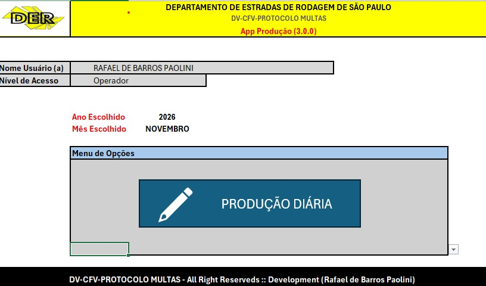
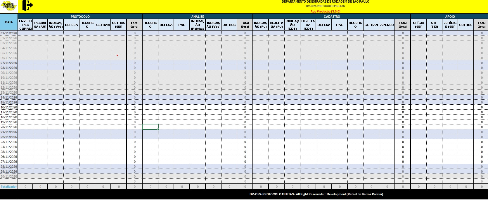

Tela principal
Menu do sistema
O menu apresenta a identificação do usuário, o nível de acesso e a competência selecionada para o acompanhamento da produção.
Lançamento e acompanhamento
Produção diária
A planilha organiza os registros por data e grupos de atividades, com campos de lançamento e totalizadores por grupo.

Controle de acesso
Identificação do usuário e apresentação do nível de acesso.
Competência mensal
Seleção de ano e mês para organizar os registros diários.
Totalizadores
Consolidação dos quantitativos por grupo de atividade.
Tecnologias
Ferramentas utilizadas
Microsoft Excel 365VBAAutomaçãoIntegração de dadosApresentação baseada nas capturas de tela fornecidas. Recursos não visíveis nas imagens não são presumidos nesta página.